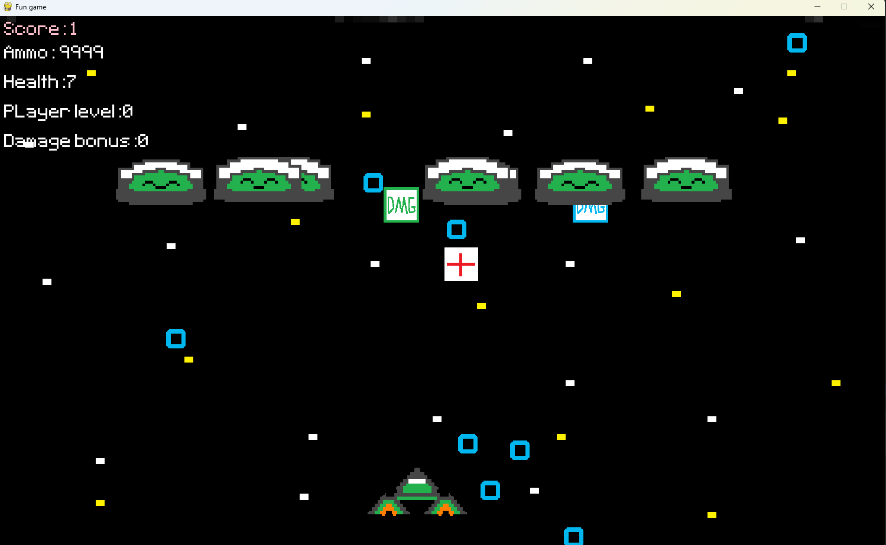
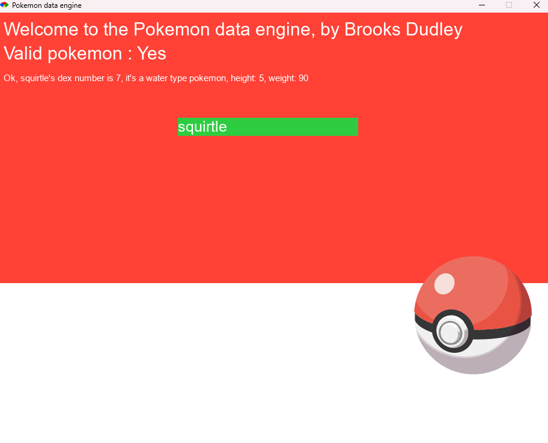

Here is my first project, a galaga like game made with pygame. Uses assets made by me.
Check out this link if you want to download it and try it out.
Here is the github repository here if you are interested in the source code.
This is a snippet from my newest pygame project. Building off everything I learned making galaga and what im learning in java, this will be much better.
Background, player assets made by others, credited in game.
This is my first ruby project, a pokemon data engine built with ruby and uses ruby2d and httparty gems. Features an interactable GUI, and uses a basic API setup to display information about a user entered pokemon.
Due to Ocra being very outdated I had a hard time getting this into an executable anybody can run. If it doesn't run on your machine you will need to install ruby to run it.
Check out this link if you want to download it and try it out.
Here is the github repository here if you are interested in the source code.